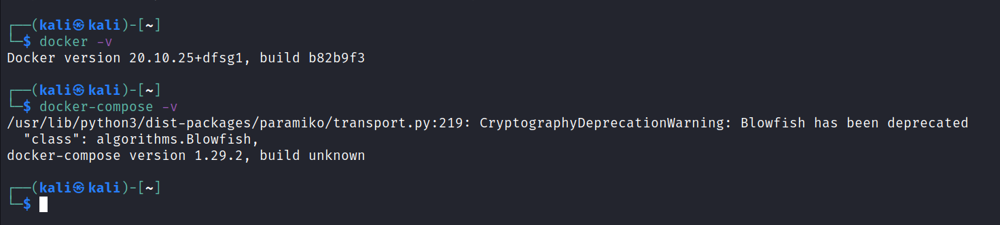

For the setup we just need few things:
Burp Suite
Docker IO
Docker Compose
Dockers can be little bit finicky:
Great opporunity to learn how docker works and also how to troubleshoot,
To install docker.io
sudo apt install docker.io

To install docker.io
sudo apt install docker.io
To install docker compose
sudo apt install docker-compose
After that download the file from the link and unzip it
https://cdn.fs.teachablecdn.com/CbIyLkOuS4GUH7TNFTFg
tar -xf peh-web-labs.tar.gz
cd labs
sudo docker-compose up
to run the docker in the background than just add -d in the end.
sudo docker-compose up -d
To check what contains are running:
sudo docker ps -a
To shutdown the docker we use
sudo docker-compose stop
To remove the contains:
sudo docker rm $(sudo docker ps -aq)